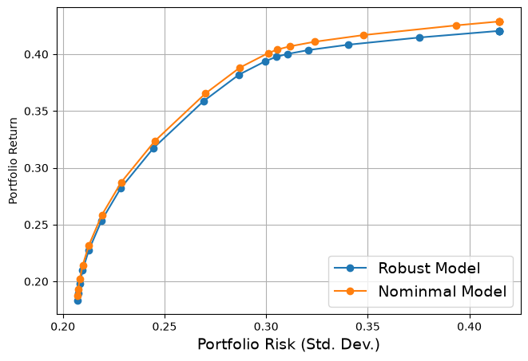
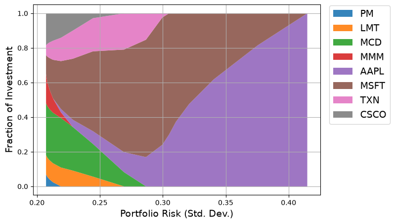

Robust Mean-Variance Portfolio#
This case study will replicate the results of a robust mean-variance portfolio model presented in [ApS23] in a more concise and straightforward way. The model is written as
where the mean returns \(\pmb{\mu}\) belongs to the ellipsoidal uncertainty set
with \(Q\) being a known positive semidefinite matrix.
The nominal mean returns \(\pmb{\mu}\) and the covariance matrix \(\pmb{\Sigma}\) are estimated based on the stocks.csv dataset, which provides the weekly prices of eight stocks from March 21, 2016 to March 18, 2021.
import pandas as pd
pd.options.display.precision = 4
data = pd.read_csv('stocks.csv').set_index('Date')
data
| PM | LMT | MCD | MMM | AAPL | MSFT | TXN | CSCO | |
|---|---|---|---|---|---|---|---|---|
| Date | ||||||||
| 2016-03-14 | 64.9492 | 180.0196 | 102.7192 | 126.2342 | 24.2380 | 47.8760 | 46.3563 | 22.2157 |
| 2016-03-21 | 64.5522 | 177.6482 | 102.0652 | 125.5699 | 24.1808 | 48.5205 | 46.0396 | 21.9256 |
| 2016-03-28 | 66.6844 | 181.8123 | 105.1530 | 127.9139 | 25.1694 | 49.7377 | 47.0465 | 22.4981 |
| 2016-04-04 | 67.4398 | 184.4118 | 105.9312 | 127.2268 | 24.8650 | 48.7084 | 47.0059 | 21.7139 |
| 2016-04-11 | 66.9251 | 184.0125 | 105.7822 | 128.8683 | 25.1373 | 49.8093 | 47.8503 | 22.0786 |
| ... | ... | ... | ... | ... | ... | ... | ... | ... |
| 2021-02-15 | 72.9401 | 308.8611 | 198.4512 | 156.0663 | 127.8069 | 234.6678 | 165.2999 | 42.0870 |
| 2021-02-22 | 71.7195 | 304.1006 | 192.7475 | 154.7580 | 119.3337 | 226.8236 | 159.6648 | 41.3407 |
| 2021-03-01 | 73.5462 | 315.8780 | 195.0906 | 159.8323 | 119.4911 | 226.0623 | 155.6516 | 42.6121 |
| 2021-03-08 | 74.8778 | 315.6553 | 199.7663 | 163.4745 | 119.1073 | 230.1131 | 160.8697 | 44.9800 |
| 2021-03-15 | 77.3020 | 332.5984 | 209.7010 | 168.8494 | 118.6152 | 225.2033 | 161.6019 | 44.9615 |
262 rows × 8 columns
Following the data preparation steps introduced in the Mosek Portfolio Optimization Cookbook, the estimated mean return and covariance matrix can be returned by the estimate_return() function, imported from the file preprocessing.py.
from preprocessing import estimate_return
mean, cov = estimate_return(data)
mu0 = mean.values
Sigma = cov.values
We then define the rmv_portfolio() function for formulating and solving the robust mean-variance portfolio model. When calling the function, users may specify the estimated mean return mu0 and estimated covariance matrix Sigma, the risk-aversion coefficient delta, and the uncertainty parameter gamma.
from rsome import ro
from rsome import cpt_solver as cpt
import rsome as rso
def rmv_portfolio(mu0, Sigma, delta, gamma=0, display=False):
G = np.linalg.cholesky(Sigma)
Q = G@G.T
n = len(mu0)
model = ro.Model()
x = model.dvar(n)
r = model.dvar()
mu = model.rvar(n)
uset = rso.quad(mu - mu0, np.linalg.inv(Sigma)) <= gamma**2
if gamma == 0:
model.max(mu0@x - (delta/2)*r)
else:
model.maxmin(mu@x - (delta/2)*r, uset)
model.st(rso.quad(x, Sigma) <= r)
model.st(x.sum() == 1, x >= 0)
model.solve(cpt, display=display)
risk = r.get()**0.5
return model.get() + (delta/2)*r.get(), risk, x.get()
Next, the function is executed repeatedly in the following for-loop to find out the worst-case returns, the portfolio risks in terms of the standard deviations, and the optimal solutions, under different risk-aversion preference.
import numpy as np
deltas = np.logspace(start=-1, stop=2, num=20)[::-1]
results = pd.DataFrame()
ro_sols = []
nom_sols = []
for i, delta in enumerate(deltas):
wc_return, risk, xs = rmv_portfolio(mu0, Sigma, delta, gamma=0.02)
results.loc[i, 'RO Return'] = wc_return
results.loc[i, 'RO Risk'] = risk
ro_sols.append(xs)
wc_return, risk, xs = rmv_portfolio(mu0, Sigma, delta)
results.loc[i, 'Nominal Return'] = wc_return
results.loc[i, 'Nominal Risk'] = risk
nom_sols.append(xs)
ro_sols = np.array(ro_sols)
nom_sols = np.array(nom_sols)
The trade-off between the worst-case mean return and the risk is illustrated by the following figure.
import matplotlib.pyplot as plt
plt.figure(figsize=(7.5, 5))
plt.plot(results['RO Risk'], results['RO Return'], marker='o', label='Robust Model')
plt.plot(results['Nominal Risk'], results['Nominal Return'], marker='o', label='Nominmal Model')
plt.legend(fontsize=14)
plt.xlabel('Portfolio Risk (Std. Dev.)', fontsize=14)
plt.ylabel('Portfolio Return')
plt.grid()
plt.show()

Finally, we plot the portfolio allocation \(\pmb{x}\) against different portfolio risks as a result of varying the risk-aversion coefficient \(\delta\).
n = data.shape[1]
plt.figure(figsize=(7.5, 5))
bottom = 0
for i in range(n):
plt.fill_between(results['RO Risk'], bottom, bottom+ro_sols[:, i],
alpha=0.9,
label=data.columns[i])
bottom += ro_sols[:, i]
plt.legend(bbox_to_anchor=(1.26, 1.02), fontsize=14)
plt.xlabel('Portfolio Risk (Std. Dev.)', fontsize=14)
plt.ylabel('Fraction of Investment', fontsize=14)
plt.grid()
plt.show()

Interested readers may refer to the Mosek Portfolio Optimization Cookbook for the similar results.
Reference
MOSEK ApS. MOSEK Portfolio Optimization Cookbook. 2023.